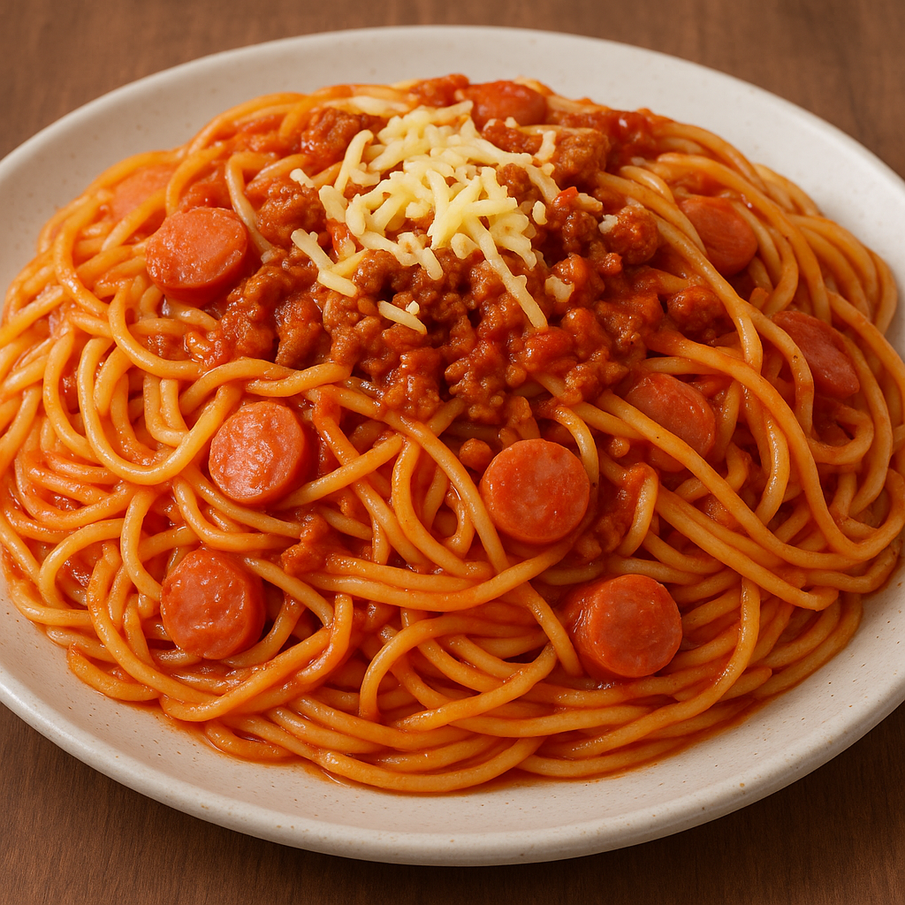

Home
Spaghetti

Filipino Style Spaghetti
Filipino-style spaghetti, which is popular in the Philippines due to its festive and cozy appeal, is a sweet, savory, and comforting take on the traditional Italian dish. Along with ground beef or pork, the noodles are dipped in a rich, slightly sweet tomato-based sauce that is made unique by banana ketchup and frequently adorned with sausage or hot dog slices. A thick layer of grated processed cheese, usually cheddar, melts into the hot pasta, giving the sweetness a salty, creamy contrast. This dish, which is frequently served at celebrations, family get-togethers, and birthdays, exemplifies the Filipino talent for transforming well-known flavors into something distinctly happy and fulfilling.
Ingredients
- 1 cup (240 ml) tomato sauce
- grated cheese
- condensed milk
- 500 g pasta
- salt and pepper to taste
- 500 ground pork or beef
- hotdogs diced
- 1 medium onion, finely chopped
- 4 cloves garlic, minced
Steps
- Boil the pasta
- Fill a large pot with water, bring to a rolling boil, add 1 tbsp salt. Cook the spaghetti until al dente according to package directions (usually 8–10 minutes). Before draining, scoop out and reserve ½–1 cup of the starchy pasta water. Drain and set pasta aside.
- Saute the aromatics
- While the pasta cooks, heat 2 tbsp oil in a large skillet or saucepan over medium heat. Add the chopped onion and cook 3–4 minutes until softened. Add the minced garlic and sauté 30 seconds until fragrant.
- Brown the meat
- Add the ground pork/beef to the skillet. Break it up with a spoon and cook 6–8 minutes until no longer pink and nicely browned. If there’s excess fat, carefully drain a little, leaving enough to coat and flavor the sauce.
- Cook the hotdogs
- Push the meat to one side, add the sliced hotdogs (or add together with the meat earlier if you prefer). Fry 2–3 minutes until they pick up a little color.
- Add sauces and sweetener
- Stir in banana ketchup and tomato sauce (or tomato sauce + extra sugar if substituting). Add the 2 tbsp brown sugar and 1 tbsp Worcestershire/soy sauce if using. Pour in about ¼ cup of the reserved pasta water to loosen the mixture; stir to combine.
- Simmer and adjust
- Bring the sauce to a gentle simmer, then lower heat. Let it simmer 10–15 minutes so flavors meld and the sauce thickens. Taste and adjust: add more brown sugar for sweetness, a pinch of salt, black pepper, or a tiny splash of vinegar if the sauce is overly sweet.
- Combine pasta and sauce
- Add the drained spaghetti into the skillet (or transfer sauce to the pasta pot). Toss thoroughly to coat the noodles. If sauce seems too thick or dry, add a little more reserved pasta water, 1–2 tbsp at a time, until you reach your preferred sauciness.
- Add cheese
- Stir in about ¾ cup of the grated cheese into the warm spaghetti so it starts to melt and become creamy. Reserve the rest for topping each serving.
- Serve
- Plate the spaghetti and finish with extra grated cheese on top. Serve hot.
- Storage & reheating tips
- Sauce can be made ahead and refrigerated up to 3 days (or frozen). Reheat gently, adding a splash of water to loosen.
- If reheating pasta already mixed with sauce, add a splash of water or milk and heat slowly to restore creaminess.